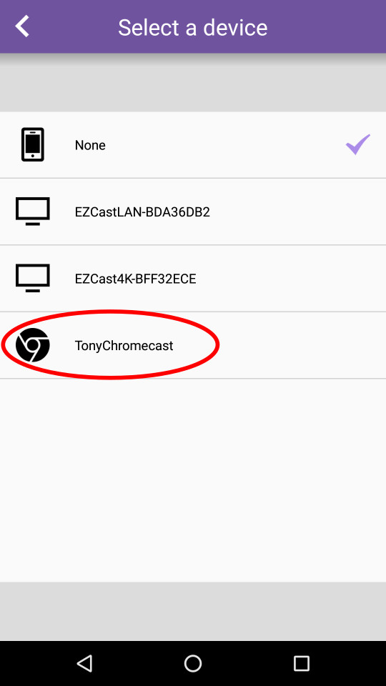

EZCast 同屏器避坑指南——用了两年踩过的那些要命的坑
EZCast 同屏器看着就是个插电视上就好使的小东西，实际上从固件升级到省电模式，从会议室投屏到 NAS 视频投射，大大小小的坑能凑一桌麻将。这篇把我踩过的最典型的五个坑整理出来，提前知道能少走不少弯路。
EZCast 同屏器我用了快两年了，最早是在官网上看到它的介绍才入坑的，从入门款 EZCast 2 到后来换的 Pro Dongle II，算是一路踩坑一路过来的。说它"看着简单"真的是客气——一个 HDMI 口接电视，一个 USB 口供电，手机一搜就投，这是它给人的第一印象。但用久了你会发现，这小东西在几个关键节点上特别容易翻车，而且翻起来还挺吓人。
今天把我踩过的最狠的五个坑整理出来，每个都讲清楚我当时看到什么不对劲、为什么会这样、以及最后怎么救回来的。如果刚好你手上也有一台 EZCast，这些提前知道比到时候慌慌张张去搜解决办法强得多。
坑一：固件升级中途断电——真的会变砖
这是我踩过最狠的坑，没有之一。
症状
某天晚上 EZCast App 弹出一个升级提示，说固件有新版本。我想这事儿不就是点一下等它跑完吗？手机连上同屏器的 Wi-Fi，点了确认升级，然后去泡了杯茶回来——同屏器的待机画面黑了，再也没亮起来。App 扫描不到它了，按电源键也没反应，USB 拔掉重插还是黑屏。我当时以为这玩意直接烧了。
原因
后来去EZCast文档翻了一下才弄明白：升级过程中同屏器的 Wi-Fi、HDMI 输出、Flash 读写同时拉电流，USB 供电稍微不稳就会中途断电。我那台入门款用的是电视背后的 USB 口供电，电视 USB 口电流本来就不稳——升级过程中某个瞬间电流掉了，同屏器的固件分区变成了一半新一半旧的"半刷状态"，直接变砖。
解法
其实救回来比我想的简单。EZCast 绝大多数型号都有一个恢复模式：
- 拔了同屏器的 USB 让它彻底断电
- 用牙签捅住底部的 Reset 小孔不松
- 保持按住 Reset，插回 USB 通电
- 继续按住 15 秒左右，看到待机画面开始闪蓝底再松开
进了恢复模式之后，同屏器会用出厂默认的 SSID 开放 Wi-Fi，手机连上后 App 能扫到它，固件文件从官方下载拿就行，手动刷一遍就活了。我当时就是这么救回来的——捅 Reset 那一下手都在抖，还好 15 秒后画面真的亮了。
预防措施说人话就是一条：升级的时候别用电视 USB 或电脑 USB 供电，老老实实插个墙插的 USB 充电头（5V/1.5A 以上），升级期间别碰同屏器、别碰路由器。

坑二：省电模式选"完全关机"后——同屏器找不到了
症状
有段时间我觉得同屏器一直通着电挺浪费的，就去 Settings 里开了定时关机，选的是"完全关机"模式，空闲 15 分钟后触发。第二天早上起来想投屏，App 扫遍了整个房间就是找不到同屏器。Wi-Fi 里也搜不到它的 SSID。我开始怀疑它是不是又变砖了，捅了 Reset 也没反应。
原因
这个坑文档里提了一句但没加粗——选了"完全关机"之后，同屏器会变得连 EZCast App 也扫不到。意思是它真的把 Wi-Fi 模块和 HDMI 输出完全断电了，不是"待机省电"那种半休眠。我捅 Reset 没反应是因为捅的时机不对——当时同屏器确实已经断电了，Reset 按了也没电流。
解法
很简单：手动按一下同屏器的电源键（或者如果是 USB 供电的就拔了重插一下 USB），它就重新启动了。之后我把省电模式改成了"低功耗待机"——空闲超时后 Wi-Fi 降功率但还能被扫描到，省电效果差点但不会失联。
总结：选"完全关机"前想清楚——你能接受下次用的时候手动按一下电源键吗？如果经常随手就投，别选这个。
坑三：NAS 视频投不到同屏器——明明在同一个 Wi-Fi 里
症状
家里 NAS 里存了一堆电影，想直接投到电视上看。按文档说的 NAS 开了 DLNA，手机 DS video App 里选了视频，点投射图标——弹出的设备列表里就是看不到 EZCast 同屏器。我确认了三遍手机和同屏器都连的家里路由器的 Wi-Fi，NAS 也在同一个网段。
原因
排查了半小时才发现：我的 EZCast 同屏器当时没有绑定路由器 Wi-Fi。EZCast 同屏器默认是以独立 Wi-Fi 热点模式运行的（就是它自己发一个 EZCast-XXXXXX 的 Wi-Fi），而不是连到家里路由器上。NAS 和手机都在路由器网段里，同屏器在自己的独立网段里——虽然你手机同时连着路由器和同屏器的 Wi-Fi 可能会自动切换，但 DLNA 发现机制要求发射端和接收端必须在同一个局域网，跨网段根本发现不了。
解法
进 EZCast App → Settings → WiFi router → 让同屏器连到家里路由器的 Wi-Fi。绑定之后同屏器就从"自建热点模式"变成"路由器客户端模式"了，NAS 和同屏器终于在同一个网段里，DLNA 投射立刻就通了。
还有个附带好处：绑定路由器 Wi-Fi 之后，手机不用再手动切换 Wi-Fi 就能直接投屏，体验好太多。
坑四：四分屏 Host 角色丢了——Guest 谁都能投
症状
Pro 系列的四分屏功能我开会的时候常用——笔记本 Mirror PPT 当 Host，让同事各自连进来 Mirror 自己的资料。某天开个重要评审会，我把 Host 角色转给旁边一个同事让他主持，结果他投完 PPT 之后随手把 App 关了。会议室里另外三个人都连着 Pro 同屏器，Guest 请求上屏的通知弹出了一堆，但没人批也没人拒，整个四分屏就卡住了。
原因
Host 角色是首个连上 Pro 同屏器并登录账号的设备，关掉 App 之后 Host 就没了——但 Pro 同屏器本身不会自动把 Host 转给下一个设备，因为那样控制权会乱。Guest 连上后发出的上屏请求必须有 Host 来批，Host 不在就是死锁状态。
解法
最快的救场方法：找个手机装 EZCast Pro App，连上 Pro 同屏器登录账号——你就是新 Host 了，进去把卡住的 Guest 全踢掉。
预防措施：开会前跟团队说清楚 Host 权限的事；把 Pro App 里的"自动批准 Guest 上屏"打开（小团队内部会议可以开，外部来宾多的正式会议别开）；尽量不要在会议中途转 Host 角色，真要转也要确保接 Host 的人 App 不挂。

坑五：USB 供电电流不足——同屏器隔三差五自动重启
症状
之前用一台杂牌 USB 充电头给同屏器供电（5V/1A 的那种），投着投着同屏器就黑一下屏然后自动重启。刚开始以为是 Wi-Fi 不稳定、HDMI 接触不良、甚至怀疑电视有问题。换了同屏器位置、换了 HDMI 线、换了 Wi-Fi 频道——还是隔几天就出一次。
原因
EZCast 入门款官方要求 USB 供电是 5V/1.5A（Pro 系列更高），杂牌头只有 1A。同屏器在投屏的时候 Wi-Fi 编码解码满负载运行，峰值电流会超过 1A，供电跟不上就触发硬件保护自动重启。这不是软件 bug，是硬件级的供电不足。
解法
换了个正品的 5V/2A 墙插充电头之后，自动重启的问题再也没出现过。另外电视背后的 USB 口通常也是 0.5~1A 输出，同样会有供电不足的问题——如果之前你也是插电视 USB 的，换墙插充电头试试。
防坑清单（三条最要紧的记住就行）
- 固件升级必用墙插供电，别用电视 USB / 电脑 USB / 笔记本 USB 供电，升级期间绝对不碰
- 省电模式别选"完全关机"（除非你真的不在乎下次手动开机），选"低功耗待机"就够了
- 搞不懂网络问题先看同屏器有没有绑路由器 Wi-Fi，独立热点模式下 DLNA / NAS 投射全通不了
说实话，知道这些坑之后这同屏器其实相当省心——大部分时候手机一投就有画面，NAS 里的电影也能直接拉到大屏幕上，Pro 系列的四分屏开会也好用。但它就是在那几个关键边界条件上特别容易翻车，而且翻起来还挺吓人的。整理了一份完整的故障排查手册放在了GitHub、Gitee、GitCode三个仓库里，怕哪天某个平台抽风用户找不到。提前留个心眼，别像我似的变砖了才去搜恢复方法。